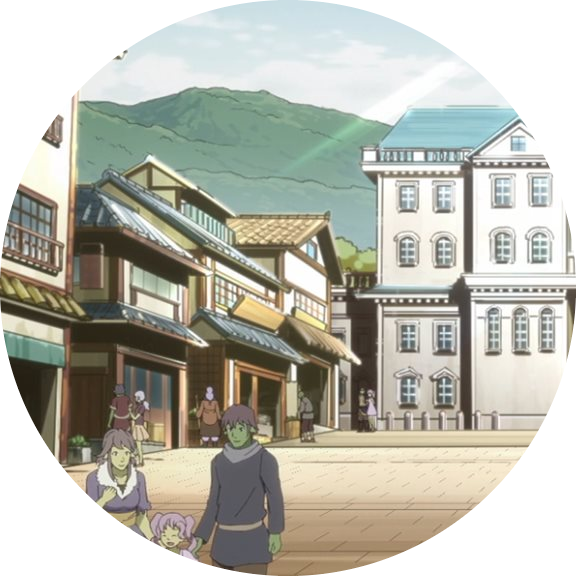
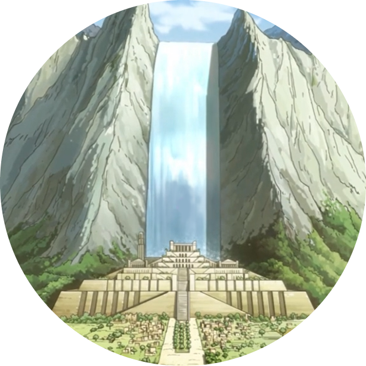
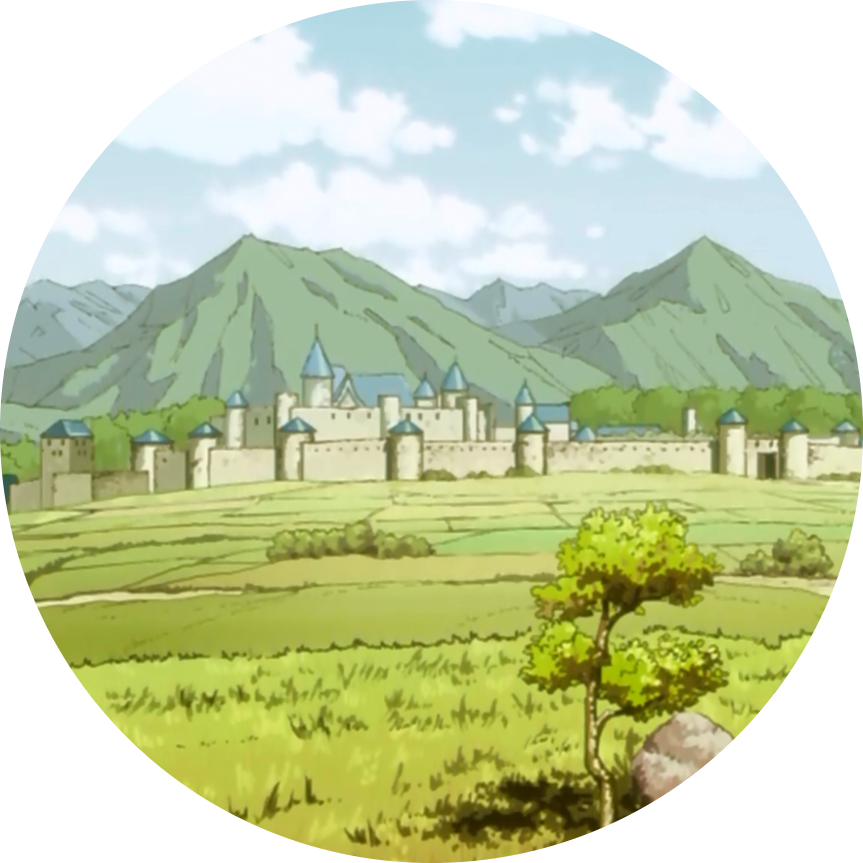
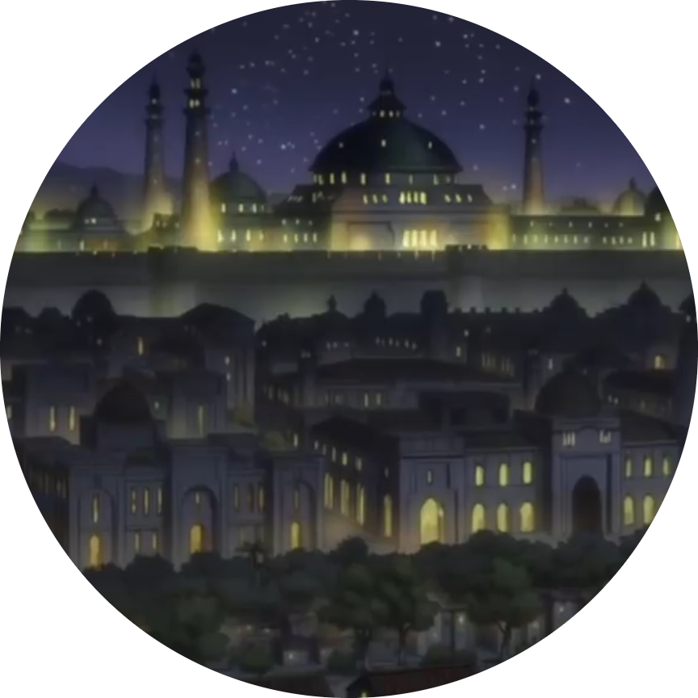
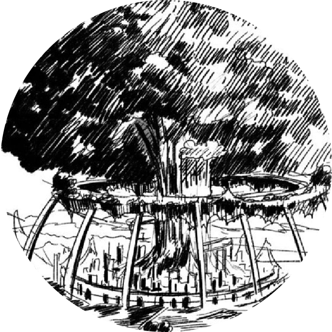
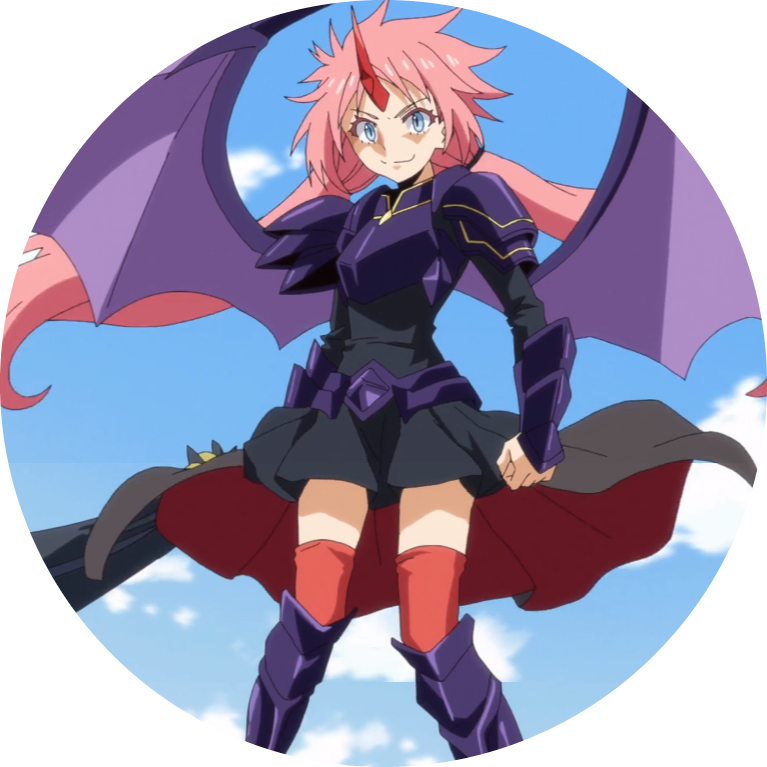
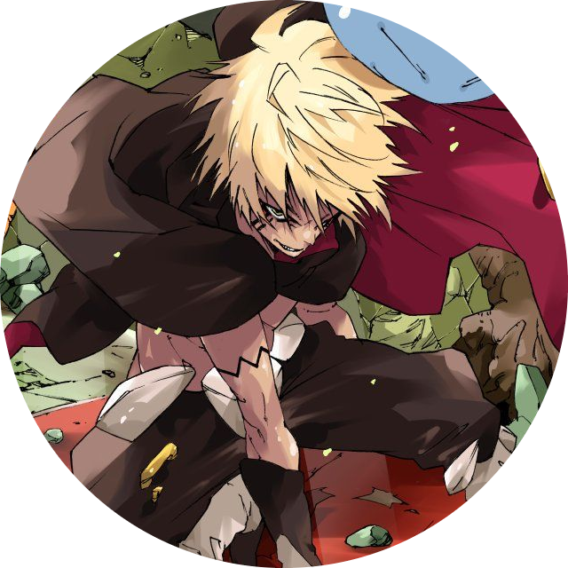
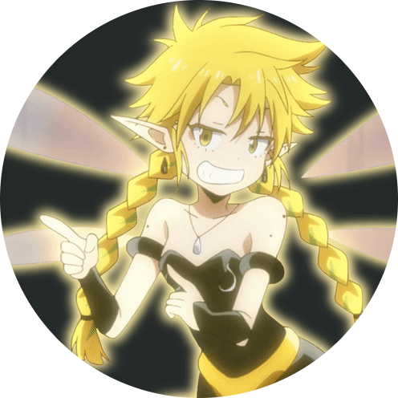

Jura Tempest’s most famous and profitable export are their Health Potions. Among the health potion providers, Tempest is easily the best and most consistent, as Rimuru can make them unlimitedly with the power of his skills and his slime body. Because of the quality of his potions, he is able to transmute it into much more numerous, inferior potions. The potions themselves have a 99% in terms of effectiveness, however Tempest's scientist, Vestia, is researching on how to make a 100% effective healing potion. The potions are so good because of the Hipokute Grass, which resides in the Sealed Cave in Tempest. Because of the massive amounts of magic that had been simmering inside of the cave, the normal grass absorbed it, and became Hipokute Grass. Rimuru started mass producing these potions as he started his kingdom's reign. Many nations have started trading with Tempest because of their potions, which allowed to become a global super power.
The image on the left is Hipokute grass, hover over it to see the health potion.Apito Honey is an exquisite honey made by Apito, a Queen Bee, and is used for different dishes and trades.
Kaijin and Kurobe, both being excellent blacksmiths, forge top-tier gear and equipment everyday for trades.

Apple Brandy is Tempest Specialty, and is made from Eurazaninan fruits, a kingdom known for their excellent fruits.
Throughout Rimuru City, there are multiple shops and merchants to buy from, as well as the occasional events.
Dwargon
Eurazania
Blumund
Farmenas
Sarion
Milim
Veldora
Ramiris